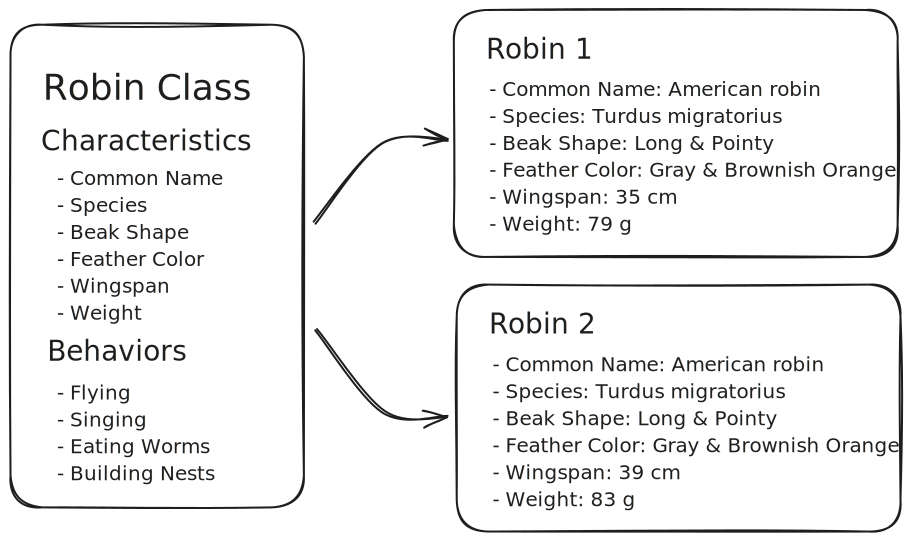
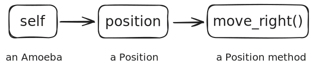

# Define a class named "Robin".
#
# (Class names look LikeThis rather than like_this.)
class Robin:
# Class Attributes
common_name = "American Robin"
species = "Turdus migratorius"
beak_shape = "pointy"
# The special method to initialize instances of this class
def __init__(self, wingspan, weight, color):
self.wingspan = wingspan
self.weight = weight
self.color = color
# Define some instance methods that describe the behavior that Robins
# will have.
# Each of these methods will use `id(self)` so that you can see the identity
# of the object that it is being called on.
def fly(self, to):
print(f"robin {id(self)} is flying to {to}!")
def sing(self):
print(f"robin {id(self)} is singing!")
def eat(self, what):
print(f"robin {id(self)} is eating {what}!")
def build_nest(self, where):
print(f"robin {id(self)} is building a nest {where}!")5 Introduction to Object-Oriented Programming
Think about the natural world around you for a moment. You can imagine birds, trees, cells, and countless other entities. Each of these things has specific characteristics and behaviors that help you recognize them. One way to turn these entities into code is by using Classes and Objects.
In programming terms, an object is sort of like a specific entity that exists in the real world:
- A particular robin building a nest outside your window
- An individual E. coli cell growing in your Petri dish
- A specific patient in a hospital
Just like real-world things, objects have two key aspects:
- Characteristic Properties: what the object is or has (identity, color, size, weight)
- Behaviors: what the object can do (fly, eat, divide)
For example, that robin outside your window has a particular color (characteristic) and can sing a specific song (behavior). The E. coli cell in your Petri dish has a particular size (characteristic) and can metabolize lactose (behavior).
If objects are the specific things (like a particular robin or E. coli cell) in your domain, then classes are the blueprints or templates that define the characteristics and behaviors of those entities.
For instance, the Robin class might specify that all robins have characteristics like species, wingspan, feather color, beak shape, plus behaviors such as flying, singing, and nest-building. But each individual robin instance would have its own specific values for these characteristics and behaviors that depend on those specific characteristics.

Classes enable us to create our own custom data types that model real-world entities. Instead of just having numbers and strings, we can have Birds, Bacteria, Patients, Proteins, and Molecules, each with their own specialized characteristics and behaviors.
This connection between our programs and the real-world domain we are modeling is what makes object-oriented programming powerful. It allows us to represent and manipulate complex biological entities in a way that feels natural and intuitive, mirroring how we already think about these systems in our research.
For the rest of this tutorial, we’ll explore how to implement Object-Oriented Programming (OOP) in Python, giving you the tools to represent the biological systems you work with in a natural way.
Four Pillars of OOP
When learning about object-oriented programming (OOP), you’ll often hear about four fundamental concepts (pillars) that form its foundation. These concepts help us organize code in a way that mirrors how we think about real-world objects and their relationships:
- Encapsulation: bundling data and methods that work on that data into a single unit (a class)
- Restricts direct access to some components
- Protects internal state of an object
- Hides data
- Abstraction: showing only essential features while hiding complicated implementation details
- Polymorphism: objects of different classes responding to the same method in their own ways
- Inheritance: creating new classes that receive attributes and methods from existing classes
We’ll introduce some of these concepts at a practical level in this tutorial and continue to explore them throughout the course.
Classes in Python: Syntax and Structure
Now that we have some conceptual framework for object-oriented programming, let’s look at how to write classes in Python. To define a class, we use the class keyword, followed by the name of the class. In the indented section that follows, we can define variables and functions that will be associated with the class and with instances of the class:
Creating an instance of a class looks a lot like calling a function:
robin = Robin(wingspan=35, weight=80, color="gray & reddish brown")You can access the instance attributes using the “dot” syntax:
print(
f"You see a {robin.color} robin "
f"that weighs {robin.weight} grams "
f"with a wingspan of {robin.wingspan} centimeters!"
"\nThat's a nice find!!\n"
)You see a gray & reddish brown robin that weighs 80 grams with a wingspan of 35 centimeters!
That's a nice find!!
Even though we specified what each of the objects attributes should be when we created it, that doesn’t mean we can’t change them later if we need to. Let’s say our robin eats a worm, and then it gains a little weight afterwards:
# Show the robin's current weight
print(f"before eating the worm, the robin weighs {robin.weight} grams")
# The robin eats the worm
robin.eat("a delicious worm")
# Then it gains 2 grams of weight
robin.weight += 2
# Show the robin's weight again
print(f"after eating the worm, the robin weighs {robin.weight} grams")before eating the worm, the robin weighs 80 grams
robin 4395090672 is eating a delicious worm!
after eating the worm, the robin weighs 82 gramsWe can access the object’s behavior by “calling” its methods:
robin.sing()
robin.fly(to="Mexico")
robin.eat(what="a worm")
robin.build_nest(where="in a tree")robin 4395090672 is singing!
robin 4395090672 is flying to Mexico!
robin 4395090672 is eating a worm!
robin 4395090672 is building a nest in a tree!Multiple distinct instances of the Robin class can be created. Check out how each of them has a different ID:
robin_1 = Robin(wingspan=35, weight=80, color="gray & reddish brown")
robin_2 = Robin(wingspan=32, weight=78, color="gray & brownish orange")
robin_3 = Robin(wingspan=36, weight=79, color="gray & reddish brown")
print(robin_1)
print(robin_2)
print(robin_3)
robin_1.sing()
robin_2.sing()
robin_3.sing()<__main__.Robin object at 0x10e9234d0>
<__main__.Robin object at 0x10e923390>
<__main__.Robin object at 0x105ede520>
robin 4539430096 is singing!
robin 4539429776 is singing!
robin 4394444064 is singing!Even though all three of the Robin objects were created from the same class, they are distinct entities in our program. If we change something about one of them, it won’t change the others:
print(
"before changing weight and color of robin 1,",
"the weight and color of robin 2 are:",
)
print(robin_2.weight)
print(robin_2.color)
robin_1.weight += 1
robin_1.color = "mostly gray, with some reddish brown"
print(
"\nafter changing weight and color of robin 1,",
"the weight and color of robin 2 are:",
)
print(robin_2.weight)
print(robin_2.color)before changing weight and color of robin 1, the weight and color of robin 2 are:
78
gray & brownish orange
after changing weight and color of robin 1, the weight and color of robin 2 are:
78
gray & brownish orangeFinally, we can even give objects completely new attributes if we want to:
robin_1.favorite_food = "french fries"
print(robin_1.favorite_food)french friesBe careful with this though. That attribute will not be available on all your objects. It will only exist on the specific object where you explicitly added it:
try:
print(robin_2.favorite_food)
except AttributeError as error:
print(error)'Robin' object has no attribute 'favorite_food'Next, let’s dig into some more of the details of creating and using classes in Python.
Initializing Objects
When you instantiate an object from a class in Python, it doesn’t simply create an empty shell. Instead, it invokes a special initialization method called __init__ (if defined). This method serves as the object’s constructor, handling the necessary setup to ensure the newly created object is fully functional.
Let’s make a new class called BlueJay to illustrate some of the details:
class BlueJay:
def __init__(self):
self.wingspan = 38 # centimeters
self.color = "blue"In this class, the init method takes only one parameter, self, which refers to the newly created object. It assigns the instance attribute color a default value of “blue”. Take a look:
blue_jay = BlueJay()
print(blue_jay)
print(blue_jay.wingspan)
print(blue_jay.color)
# We can change the value of an instance attribute after the object is created.
blue_jay.wingspan = 35
blue_jay.color = "shockingly blue"
print(blue_jay.wingspan)
print(blue_jay.color)<__main__.BlueJay object at 0x105f7c1a0>
38
blue
35
shockingly blueCreating an object then immediately updating its attributes is such a common operation that Python lets you do it all in one step. This is done by adding additional parameters to the __init__ function:
class BlueJay:
def __init__(self, wingspan, color):
self.wingspan = wingspan
self.color = color
blue_jay = BlueJay(wingspan=36, color="bright blue")
print(blue_jay)
print(blue_jay.wingspan)
print(blue_jay.color)<__main__.BlueJay object at 0x10e8c7230>
36
bright blueNow, we need to call BlueJay and provide the color and wingspan arguments. Failing to do so will result in an error:
try:
BlueJay()
except TypeError as error:
print(error)BlueJay.__init__() missing 2 required positional arguments: 'wingspan' and 'color'The error hints at Python’s inner workings. It mentions that two required arguments are missing: color and wingspan. But hang on, doesn’t __init__ have three parameters?
It does! This reveals how Python handles class instantiation: it first creates the object (via __new__ behind the scenes), then initializes it with __init__.
When initializing, Python automatically passes the new object as the first argument (typically called self, but you could name it anything). You only need to provide the remaining arguments – hence the error about missing two arguments, not three.
Remember that __init__ works like any other Python function. You can use all the parameter options we covered earlier (see Section 4.3), such as default values for parameters like color:
class BlueJay:
def __init__(self, wingspan, color="blue"):
self.wingspan = wingspan
self.color = color
blue_jay = BlueJay(wingspan=35)
print(blue_jay.color)blueValidating Inputs
The __init__ method plays a crucial role in validating data when creating class instances. For example, if we need to ensure birds can’t have negative wingspans or empty color strings, we can build these checks directly into initialization. When someone creates a bird with invalid data, instead of failing, the code can substitute sensible defaults. This approach guarantees that all instances meet our basic requirements, protecting against bad input:
class BlueJay:
def __init__(self, wingspan, color="blue"):
if wingspan < 0:
self.wingspan = 0
else:
self.wingspan = wingspan
if color == "":
self.color = "blue"
else:
self.color = color
blue_jay = BlueJay(-234, "")
print(blue_jay.wingspan)
print(blue_jay.color)0
blueIf you can’t identify a reasonable default value, the most straightforward approach is to simply raise an error. This strategy helps to prevent failures later on.
class Bird:
def __init__(self, species):
if species == "":
raise ValueError("species name cannot be blank")
try:
Bird("")
except ValueError as error:
print(error)species name cannot be blankAttributes
Attributes are the data that is associated with the class and with instances of that class.
Instance Attributes
When initializing a BlueJay object, the __init__ function sets up two attributes: wingspan and color. The self parameter refers to the actual instance being created, so self.wingspan = 1234 creates a wingspan attribute on your new BlueJay object.
Instance attributes are not shared between different instances of the same class:
tiny_blue_jay = BlueJay(wingspan=28)
big_blue_jay = BlueJay(wingspan=40)
print(tiny_blue_jay.wingspan)
print(big_blue_jay.wingspan)28
40If we change one after creation, it will not affect the other:
tiny_blue_jay.wingspan += 1
print(tiny_blue_jay.wingspan)
print(big_blue_jay.wingspan)29
40Nice! Each object independently manages its state, completely separate from other objects. Just be careful with mutable values in instance attributes though. For example, if you store a bird’s colors as a list (since birds can have multiple colors), you might run into some unexpected behavior:
colors = ["blue", "white", "black"]
# Create two BlueJay instances with the same color list.
tiny_blue_jay = BlueJay(wingspan=28, color=colors)
big_blue_jay = BlueJay(wingspan=40, color=colors)
print(tiny_blue_jay.color)
print(big_blue_jay.color)
# Can you guess what will happen if we change one of the colors?
tiny_blue_jay.color[0] = "electric blue"
print("\nafter changing color[0] of tiny_blue_jay")
print(tiny_blue_jay.color)
print(big_blue_jay.color)
# Or add a color to one of them?
print("\nafter appending a new color to big_blue_jay")
big_blue_jay.color.append("light blue")
print(tiny_blue_jay.color)
print(big_blue_jay.color)['blue', 'white', 'black']
['blue', 'white', 'black']
after changing color[0] of tiny_blue_jay
['electric blue', 'white', 'black']
['electric blue', 'white', 'black']
after appending a new color to big_blue_jay
['electric blue', 'white', 'black', 'light blue']
['electric blue', 'white', 'black', 'light blue']I know I just explained that instance attributes are independent between objects, which might seem contradictory here. But remember our discussion about mutable parameters back in Section 4.5.4.1? Python variables are actually references to objects, not the objects themselves. In the example, both BlueJay instances ended up referencing the identical list object. Keep this behavior in mind: it’s a common source of subtle bugs.
As mentioned earlier, you can add more instance attributes to an object after creation:
blue_jay = BlueJay(wingspan=35)
blue_jay.sneakiness = "very sneaky"
print(f"this blue jay is {blue_jay.sneakiness}!")this blue jay is very sneaky!Class Attributes
In our earlier look at the Robin class in Section 5.2, we used class attributes for data shared across all instances. This approach is ideal for information common to all robins, things like common name, species, and beak shape. Class attributes make sense when the data belongs to the entire group rather than to specific individuals.
Class attributes are defined directly within the class, but outside any methods:
class BlueJay:
common_name = "Blue Jay"
species = "Cyanocitta cristata"
beak_shape = "medium-length, conical"
blue_jay = BlueJay()
print(blue_jay.species)
print(blue_jay.beak_shape)Cyanocitta cristata
medium-length, conicalYou can also access class attributes directly on the class object itself:
print(BlueJay.species)
print(BlueJay.beak_shape)Cyanocitta cristata
medium-length, conicalAside: that might seem a bit weird, but in Python, classes themselves are also objects that have properties and methods:
print(BlueJay.__class__)<class 'type'>We will talk more about this later in the course.
Let’s update the BlueJay class to have both class and instance attributes:
class BlueJay:
# Set class attributes
common_name = "Blue Jay"
species = "Cyanocitta cristata"
beak_shape = "medium-length, conical"
def __init__(self, wingspan=38, color="blue"):
# Set instance attributes
self.wingspan = wingspan
self.color = color
tiny_blue_jay = BlueJay(wingspan=28)
big_blue_jay = BlueJay(wingspan=40)
# All blue jays will have the same values for the class attributes, but likely
# have different values for the instance attributes.
print(tiny_blue_jay.wingspan, tiny_blue_jay.species)
print(big_blue_jay.wingspan, big_blue_jay.species)28 Cyanocitta cristata
40 Cyanocitta cristataModifying Class Attributes
Class attributes don’t have to be constant, unchanging things. Let’s look at an example where we change the value of a class attribute from within an instance method to create sequential IDs for instances of that class. Check it out:
class Amoeba:
# This is a class attribute
counter = 0
def __init__(self, name=None):
# We increment the value stored in the counter class attribute by 1.
Amoeba.counter += 1
# Then, we set that value to the value of this amoeba instance's `id`
# attribute.
self.id = Amoeba.counter
# If the user doesn't specify a name, then we create a default name
# that includes the ID.
if name is None:
self.name = f"Amoeba_{self.id}"
else:
self.name = name
amoeba_1 = Amoeba()
amoeba_2 = Amoeba(name="Bob the Amoeba")
amoeba_3 = Amoeba()
print(amoeba_1.name)
print(amoeba_2.name)
print(amoeba_3.name)Amoeba_1
Bob the Amoeba
Amoeba_3Pretty neat! We will go into more fancy details like this in a future tutorial.
A Tricky Example
In our last example, we contained mutations within class methods—a safer approach than external state modification, which often causes bugs. Let’s flip this and see what happens when we modify class variables from outside. Warning: it gets a bit confusing!
print("tiny_blue_jay species:", tiny_blue_jay.species, id(tiny_blue_jay.species))
print("big_blue_jay species:", big_blue_jay.species, id(big_blue_jay.species))
print()
tiny_blue_jay.species = "i don't know!"
print("tiny_blue_jay species:", tiny_blue_jay.species, id(tiny_blue_jay.species))
print("big_blue_jay species:", big_blue_jay.species, id(big_blue_jay.species))
print()
BlueJay.species = "something else"
print("tiny_blue_jay species:", tiny_blue_jay.species, id(tiny_blue_jay.species))
print("big_blue_jay species", big_blue_jay.species, id(big_blue_jay.species))
print()
another_blue_jay = BlueJay()
print(
"another_blue_jay species:",
another_blue_jay.species,
id(another_blue_jay.species),
)tiny_blue_jay species: Cyanocitta cristata 4479812528
big_blue_jay species: Cyanocitta cristata 4479812528
tiny_blue_jay species: i don't know! 4479678320
big_blue_jay species: Cyanocitta cristata 4479812528
tiny_blue_jay species: i don't know! 4479678320
big_blue_jay species something else 4479673392
another_blue_jay species: something else 4479673392Let’s break this down:
- Initially, all
BlueJayinstances share the class attributespecieswith value"Cyanocitta cristata"(note the matching IDs in the first two lines). - When we set
tiny_blue_jay.species = "i don't know!", we’re not changing the class attribute, we’re creating a new instance attribute that shadows it. The ID changes fortiny_blue_jaybut stays the same forbig_blue_jay. - With
BlueJay.species = "something else", we modify the actual class attribute. This affects all instances that don’t have their own shadowing attribute—big_blue_jay sees the new value, but tiny_blue_jay still shows its instance-specific value. - Any new instance (like
another_blue_jay) gets the updated class attribute value.
The apparent complexity stems from Python’s attribute lookup sequence:
- Check the instance namespace first
- Then check the class namespace
- Finally, check parent classes
This enables both shared values and individual customization with the same name. This is very flexible, but potentially confusing if you don’t understand the lookup mechanism.
Methods
Methods are functions inside classes that usually work with instances of that class. Class methods exist too (like class attributes), but we’ll skip those for now.
Our previous examples were pretty basic. Let’s look at something a bit more interesting to showcase why classes and objects are actually useful.
class Amoeba:
"""
Represent an amoeba with position and energy tracking.
This class models an amoeba that can move around in a 2D space and manage
its energy levels. Each amoeba has a unique ID, position coordinates, and
energy value.
Attributes:
counter (int): Class variable that keeps track of how many amoeba instances
have been created.
id (str): Unique identifier for each amoeba instance.
position (list): A list of two integers representing [x, y] coordinates.
energy (int): Current energy level of the amoeba.
"""
counter = 0
def __init__(self, position=None, energy=5):
Amoeba.counter += 1
self.id = f"Amoeba #{Amoeba.counter}"
if position is None:
self.position = [0, 0]
else:
self.position = position
self.energy = energy
# This method controls how Amoebas will be printed
def __str__(self):
return f"{self.id} -- Position: {self.position}, Energy: {self.energy}"
def move(self, direction):
"""Move the amoeba, consuming energy."""
if self.energy <= 0:
print(f"{self.id} is too weak to move!")
return
if direction == "right":
print(f"{self.id} moves right!")
# Moving to the right means adding one to the x position
self.position[0] += 1
elif direction == "left":
print(f"{self.id} moves left!")
# Moving to the left means subtracting one from the x position
self.position[0] -= 1
elif direction == "up":
print(f"{self.id} moves up!")
# Moving up means adding one to the y position
self.position[1] += 1
elif direction == "down":
print(f"{self.id} moves down!")
# Moving down means subtracting one from the y position
self.position[1] -= 1
else:
raise ValueError("direction must one of up, down, left, or right")
self.energy -= 1
def eat(self):
"""The amoeba eats, increasing its energy."""
print(f"{self.id} eats")
self.energy += 2There are a lot of things to break down about the Amoeba class. Let’s look at a few key points:
- Class attributes vs. Instance attributes:
counteris a class attribute shared across all instancesid,position, andenergyare instance attributes unique to each object
- Constructor Implementation:
- Uses
__init__to set up each new amoeba with its initial state - Automatically increments the counter to assign unique IDs
- Handles default parameters (
position=None, energy=5) - Sets a default position if none is provided
- Uses
- String Representation:
- Implements
__str__to provide a human-readable representation - Returns formatted string containing the amoeba’s ID, position and energy
- Implements
- `move() Method Implementation:
move()validates input parameters- Checks current state before performing actions (
if self.energy <= 0) - Demonstrates internal state modification (changing position and reducing energy)
- Shows error handling with a descriptive error message (
ValueError) for bad inputs
- 2D Movement Representation:
- Uses a list
[x, y]to represent position in 2D space - Adjusts coordinates based on movement direction
- Uses a list
- State Management:
- Class methods track and update the amoeba’s internal state (position, energy)
- Behavior depends on internal state (the amoeba can’t move with 0 energy)
- Code Organization:
- Uses docstrings for class and method documentation
- Follows consistent indentation and naming conventions (methods names are short verbs)
Now, let’s try it out!
import random
# These are the four directions that an amoeba can move
four_directions = ["up", "down", "left", "right"]
# Seed the random generator so that we get the same result each time we run the code
random.seed(37424)
# Generate a random "walk"
directions = random.choices(four_directions, k=10)
# Create a new amoeba instance
amoeba = Amoeba()
# Go through each of the moves one by one
for direction in directions:
print(amoeba)
# Each turn, the amoeba has a 1/5 chance in eating some lunch
if random.random() < 0.2:
amoeba.eat()
# Then the amoeba tries to move
amoeba.move(direction)
print()Amoeba #1 -- Position: [0, 0], Energy: 5
Amoeba #1 eats
Amoeba #1 moves down!
Amoeba #1 -- Position: [0, -1], Energy: 6
Amoeba #1 moves down!
Amoeba #1 -- Position: [0, -2], Energy: 5
Amoeba #1 moves left!
Amoeba #1 -- Position: [-1, -2], Energy: 4
Amoeba #1 eats
Amoeba #1 moves down!
Amoeba #1 -- Position: [-1, -3], Energy: 5
Amoeba #1 moves up!
Amoeba #1 -- Position: [-1, -2], Energy: 4
Amoeba #1 moves down!
Amoeba #1 -- Position: [-1, -3], Energy: 3
Amoeba #1 moves up!
Amoeba #1 -- Position: [-1, -2], Energy: 2
Amoeba #1 moves left!
Amoeba #1 -- Position: [-2, -2], Energy: 1
Amoeba #1 moves up!
Amoeba #1 -- Position: [-2, -1], Energy: 0
Amoeba #1 is too weak to move!
Aside: Refactoring the Amoeba Class
After building our Amoeba class, we can see that some functionality, specifically position tracking and movement, isn’t necessarily Amoeba-specific. We’re currently using a two-element list for position and updating it within the Amoeba’s move method. While this works for our small class, let’s extract this common behavior into a dedicated Position class.
class Position:
"""
Represents a position in 2D space.
This class handles tracking and updating a position in a 2D grid system,
with methods for moving in cardinal directions.
Attributes:
x (int): The x-coordinate
y (int): The y-coordinate
"""
def __init__(self, x=0, y=0):
self.x = x
self.y = y
def __str__(self):
return f"({self.x}, {self.y})"
def move_right(self):
"""Move one unit to the right (increase x)."""
self.x += 1
def move_left(self):
"""Move one unit to the left (decrease x)."""
self.x -= 1
def move_up(self):
"""Move one unit up (increase y)."""
self.y += 1
def move_down(self):
"""Move one unit down (decrease y)."""
self.y -= 1Now that we have the Position class, we can use it in the Amoeba class instead of the original two-element list. In this way, the Amoeba class delegates the behavior of position and movement to the Position class rather than manage that itself.
class Amoeba:
"""
Represent an amoeba with position and energy tracking.
This class models an amoeba that can move around in a 2D space and manage
its energy levels. Each amoeba has a unique ID, position coordinates, and
energy value.
Attributes:
counter (int): Class variable that keeps track of how many amoeba instances
have been created.
id (str): Unique identifier for each amoeba instance.
position (Position): A Position object representing the amoeba's location.
energy (int): Current energy level of the amoeba.
"""
counter = 0
def __init__(self, position=None, energy=5):
Amoeba.counter += 1
self.id = f"Amoeba #{Amoeba.counter}"
if position is None:
self.position = Position()
else:
self.position = position
self.energy = energy
def __str__(self):
return f"{self.id} -- Position: {self.position}, Energy: {self.energy}"
def move(self, direction):
"""Move the amoeba, consuming energy."""
if self.energy <= 0:
print(f"{self.id} is too weak to move!")
return
if direction == "right":
print(f"{self.id} moves right!")
self.position.move_right()
elif direction == "left":
print(f"{self.id} moves left!")
self.position.move_left()
elif direction == "up":
print(f"{self.id} moves up!")
self.position.move_up()
elif direction == "down":
print(f"{self.id} moves down!")
self.position.move_down()
else:
raise ValueError("direction must one of up, down, left, or right")
self.energy -= 1
def eat(self):
"""The amoeba eats, increasing its energy."""
self.energy += 1There’s a new syntax element to note: self.position.move_right(). This expression chains multiple “dots” to connect attributes and method calls, something you’ll see frequently in Python. You can read it left to right like this:

Extracting the Position class from the Amoeba class brings a couple of nice benefits:
- Separation of concerns: Each class now has a single responsibility
- Reusability
- The
Positionclass could now be used for other entities that need position tracking. - If we need to change how positions work, we only need to change one place rather than in every class that need position tracking.
- The
- Encapsulation: Position management details are hidden inside the
Positionclass
This process is called a refactoring, and in this case, we have shown how to spot shared functionality and extract it into a separate class. While this is a good skill to have in your toolkit, don’t feel that you have to separate everything. Sometimes it’s overkill, especially for one-off scripts or when code reuse is unlikely. Use your judgment!
Special Methods
Special methods (like __init__ and __str__) let your custom classes work with Python’s built-in operations. These “magic methods” act as interfaces between your code and core Python functionality. Though they have a cool name, these methods aren’t mysterious, rather, they’re like standardized hooks that let your classes interact more easily with Python’s built-in functions.
For example, when Python performs certain operations, it looks for certain methods:
- When using the
+operator, Python looks for the__add__method - When using the
len()function, Python looks for the__len__method - When initializing an object, Python looks for the
__init__method - When printing an object, Python looks for the
__str__method
By implementing these methods, your custom objects can behave like Python’s native types. For example, a DNA sequence class with __add__ could allow sequence concatenation using the simple + operator, just like with strings.
In the Amoeba and Position classes, we implemented __str__. The __str__ method is called whenever Python needs a human-readable string representation of your object, such as when you use the print() function.
The __str__ method should return a concise, informative string that gives the user meaningful information about the object. If you don’t define a __str__ method for your class, Python will use a default representation. Compare the output when printing an Amoeba instance versus when printing a BlueJay instance:
print(Amoeba())
print(BlueJay())Amoeba #1 -- Position: (0, 0), Energy: 5
<__main__.BlueJay object at 0x10ecbe650>Since we didn’t explicitly define a __str__ method for the BlueJay class, Python prints a default representation of the object, rather than a nice, informative message.
Duck Typing
The duck test goes something like this:
If it looks like a duck, swims like a duck, and quacks like a duck, then it probably is a duck!
Many programming languages, including Python, use this idea for something we call duck typing. In this context, Python is essentially saying, “Well, I don’t know what class this object is, but if it can swim or fly or quack, then I will treat it like a Duck.” In other words, it only cares whether the object can perform the needed actions. If it can, then Python will happily work with it regardless of what it actually is. This practical approach represents one way Python implements the polymorphism pillar of OOP mentioned earlier.
Let’s see an example of this in action:
class Duck:
def quack(self):
print("quack, QUACK!!")
def fly(self):
print("the duck is flying!")
def swim(self):
print("the duck is swimming")
class Gull:
def squawk(self):
print("squawk!!!")
def fly(self):
print("the crow flies!")
def swim(self):
print("the gull swims near the beach")
class Whale:
def swim(self):
print("the whale is swims underwater")All three of these classes have a method called swim. If we have a collection of those objects, we can call the swim method on each of them without having to know what type the object is:
animals = [Duck(), Duck(), Gull(), Whale()]
for animal in animals:
animal.swim()the duck is swimming
the duck is swimming
the gull swims near the beach
the whale is swims underwaterWhile convenient, you might not always know if your objects have the method you need. There are two common ways to deal with this:
- Simply call the method and catch any exceptions that occur. (the Python docs call this EAFP style programming – “Easier to ask for forgiveness than permission”)
- Check if the object has the method before attempting to call it. (the Python docs call this LBYL style programming – “look before you leap”)
Both approaches have their place, depending on your specific situation and coding style preferences. Let’s look at examples of both approaches.
Asking for Forgiveness
In this example, we call the method fly on each animal and catch any exceptions that occur using try/except.
animals = [Duck(), Duck(), Gull(), Whale()]
for animal in animals:
try:
animal.fly()
except AttributeError as error:
print(error)the duck is flying!
the duck is flying!
the crow flies!
'Whale' object has no attribute 'fly'Looking Before You Leap
In this example, we use hasattr (short for “has attribute”) to check if each animal has the fly attribute before attempting to call the method.
animals = [Duck(), Duck(), Gull(), Whale()]
for animal in animals:
if hasattr(animal, "fly"):
animal.fly()
else:
print(f"{animal} can't fly!")the duck is flying!
the duck is flying!
the crow flies!
<__main__.Whale object at 0x10b02c050> can't fly!Special Methods & Duck Typing
Let’s return once more to Python’s special “magic methods”. These are a great example of how duck typing can be useful. If we implement special methods like __str__ or __len__ for our custom classes, then Python can treat them like built-ins. Here’s an example of a Gene class:
class Gene:
def __init__(self, name, sequence):
self.name = name
self.sequence = sequence
# Special method for string representation
def __str__(self):
return f">{self.name}\n{self.sequence}"
# Special method for length
def __len__(self):
return len(self.sequence)
gene = Gene("awesome_gene", "ATGATATCCATCGCTACTAGACTACTACGCGCGGCTCT")
print(len(gene))
print(gene)38
>awesome_gene
ATGATATCCATCGCTACTAGACTACTACGCGCGGCTCTIn this example, our __str__ method formats the gene to match FASTA file conventions, while the length method returns the sequence length. These additions help our Gene class behave more like native Python objects, seamlessly integrating with the language’s expectations.
Standard Python Classes
In Chapter 2, we introduced built-in Python data structures like lists, dictionaries, and sets. Now we can recognize these as classes that follow the principles we’ve just learned: they combine data and behavior into objects with methods that help us work with them safely and effectively.
Let’s look at a few examples of how built-in Python classes provide methods that operate on their internal data:
# List methods
my_list = [1, 2, 3, 4]
# Adds an element to the end
my_list.append(5)
# Reverses the list in-place
my_list.reverse()
print(my_list)
# String methods
text = " hello world "
# Strip whitespace
print(text.strip())
# Strip whitespace, then uppercase
print(text.strip().upper())
# Strip whitespace, then uppercase, then replace capital L with lowercase l
print(text.strip().upper().replace("L", "l"))
gene_info = {"name": "some_gene", "chromosome": 10}
# Print the keys
print(gene_info.keys())
# "Merge" the dictionaries
gene_info.update({"function": "tumor suppressor"})
print(gene_info)[5, 4, 3, 2, 1]
hello world
HELLO WORLD
HEllO WORlD
dict_keys(['name', 'chromosome'])
{'name': 'some_gene', 'chromosome': 10, 'function': 'tumor suppressor'}Other commonly used built-in classes include:
set– for handling collections of unique itemsfileobjects – returned when opening files with theopen()functiondatetime– for working with dates and times
Each of these classes encapsulates both data (like the items in a list) and behavior (methods like append or sort), just like the custom classes we wrote in this tutorial.
Object-Oriented Thinking
Now that you have seen the mechanics of building and using classes in Python, let’s get a little meta. When thinking in an object-oriented way, you see your system in terms interacting entities – an approach that fits naturally with how we like to think about biological systems. Here’s a quick guide to developing an object-oriented mindset:
- Identify key entities
- What are your main working pieces?
- Physical things like cells, proteins, genes, patients?
- Abstract concepts like Files, Queues, Nodes, Graphs?
- Determine their properties
- What characteristics define them?
- Example: cells have size, type, metabolic rate
- Identify their actions
- What can they do?
- Cells divide, proteins fold, birds fly, files can be read
- Group related functionality: cell properties and behaviors belong in a Cell class
- Split classes when they become unwieldy or overly complex
Start with these steps as your foundation. As you gain experience, you’ll naturally develop a feel for modeling systems that works best for your specific projects.
Balancing Approaches
Python’s flexibility lets you mix programming approaches within a single project or script.
Good Python code often combines different paradigms:
- Object-oriented for modeling biological entities where data and behavior are linked
- Functional for data transformations and analysis
- Procedural for simple sequential operations
Let the problem you’re tyring to solve guide your programming approach. Sometimes a simple module with functions works better than a class, while other times a well-designed class hierarchy models your domain in the clearest way.
In general, classes work well when you’re working with entities that have both data (attributes) and behaviors (methods) that naturally belong together. Consider using classes when:
- You need multiple similar entities with shared structure and behavior (like 1000 cells in a simulation)
- You repeatedly apply the same operations to specific data types
- Your data needs validation (ensuring DNA sequences only contain valid nucleotides)
- Data and actions are tightly coupled
- You need to track state across operations
- Your project needs additional structure
- Your data has natural hierarchies (DNA and Proteins are both Molecules)
Note: We didn’t get into class hierarchies in this tutorial. That’s an advanced topic for a later time.
Consider simpler alternatives when:
- Writing straightforward data processing scripts
- Dealing with mostly static data
- Using functions that transform data without maintaining state
- Working with data where built-in Python structures are sufficient
- Your project is small and classes would add unnecessary complexity
Many popular data science libraries like pandas and seaborn emphasize data transformations and function chaining rather than object-oriented approaches. When using these libraries, follow their patterns instead of forcing objects where they don’t make sense.
The goal is clear, maintainable code that you and colleagues understand. Start simple, adding complexity only when needed. With experience, you’ll develop intuition for when classes are the right tool.
General Tips and Pitfalls
Let’s wrap up with some broad best practices and common pitfalls for working with classes. We’ll refine these as you tackle more complex programs throughout the course.
General tips:
- Follow naming conventions
- PascalCase for classes (
BacterialCell), snake_case for methods/attributes (growth_rate)
- PascalCase for classes (
- Keep classes focused
- One clear purpose per class
- Avoid mixing responsibilities
- Design intuitive interfaces
- Consider how others will interact with your classes
- Make correct usage easy, incorrect usage difficult
- Document with docstrings
- Validate inputs in
__init__ - Implement magic methods when appropriate
General pitfalls:
- Modeling excessive behavior
- Include only what’s relevant to your specific application
- A bird has many attributes, but you only need what serves your research question
- Overloaded classes
- A
Cellclass shouldn’t also process sequencing data and generate plots
- A
- Underutilized classes
- Data-only classes might work better as dictionaries
- Method-only classes might work better as function modules
- Poor naming choices
class Genecommunicates purpose better thanclass X
Wrap-Up
Python classes create custom data types that bundle related data and functions together, helping organize code by grouping attributes and methods. In scientific programming, they’re great for representing complex entities with intertwined data and behavior. Use classes when they make your code more organized and readable – with experience, you’ll develop instincts for when to use them versus simpler approaches. Keep exploring, stay curious, and experiment with different solutions to your scientific problems!
Suggested Readings
You might enjoy checking out some of these resources: